Practice Lab
Coding a Table inside a Table
Tables can be nested inside of tables. This gives the web programmer control of object
placement inside any particular cell.
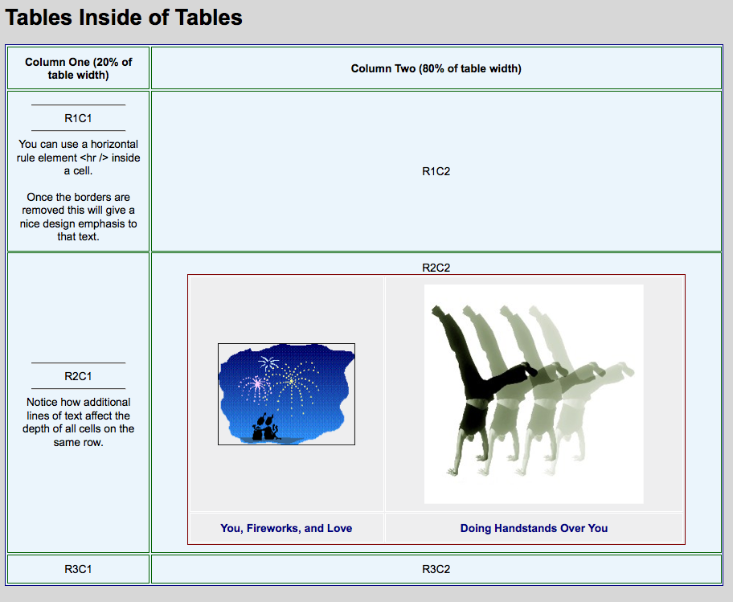
This practice lab will allow you to explore:
- A quick way to build tables inside of tables
- How to use CSS to style the tables on a page
- How to use the id=" " attribute inside an element to selectively style items using CSS
The key technique is to write two separate tables.
Once you get them set up the way you want them, simply copy the inner table code and paste it inside the specific cell of the outer table.
Begin with the main or outer table
- Use the tableInTableSTART.html file as a starting point. (right-mouse click on the file, choose "Save Link As" from list of options.)
- View this table in a browser. (Click on the image for a larger view.)
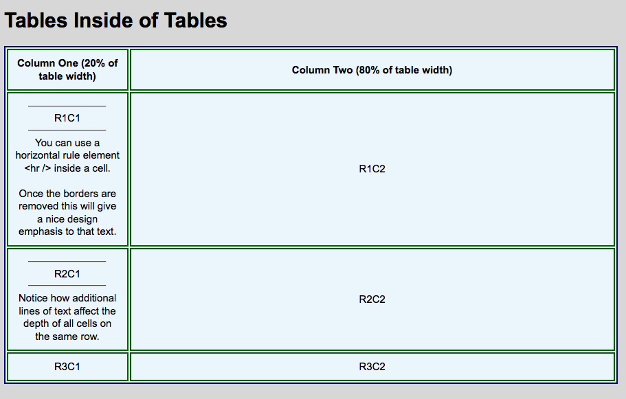
- Notice how the width of the columns can be established in the <th> or <td> elements. This only has to be done in the first row.
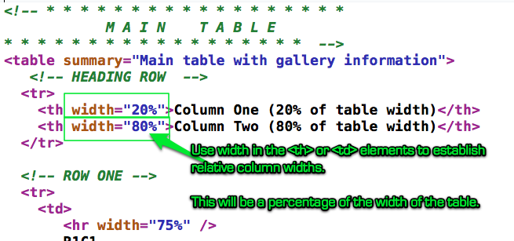
- Notice as you change the size of the browser, the table automatically adjusts. This is controlled using the CSS width statement for the table selector.
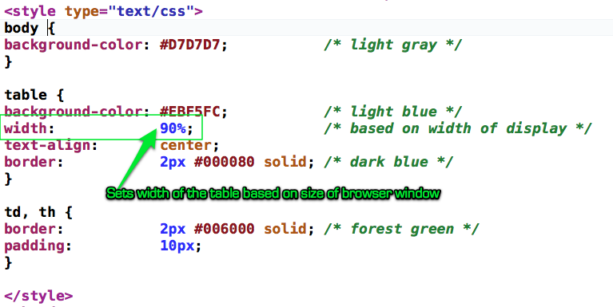
- Notice how the CSS border property is set for the table, td, and th selectors. That gives the table the grid effect most people are used to. It also means you can control if the borders show just around the table itself or around each cell.
Create the Second Table
-
Inside the <body> element, right before the <h1> heading, create another table.
Putting it at the top of the page will make it easier to see as you develop the table. You won't have to scroll down the page every time you preview the results.
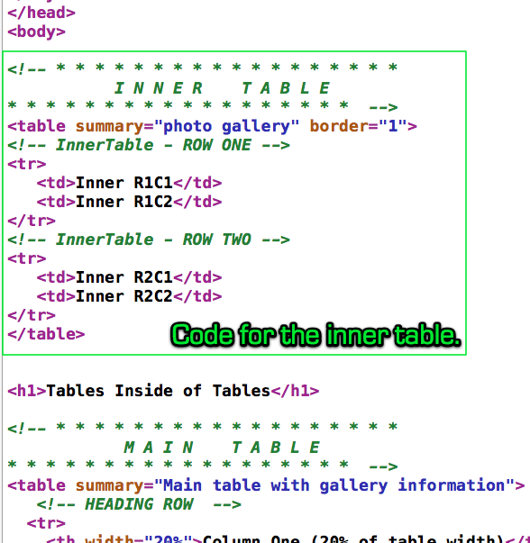
Here is what the finished page should look like (click on the image for a larger view):
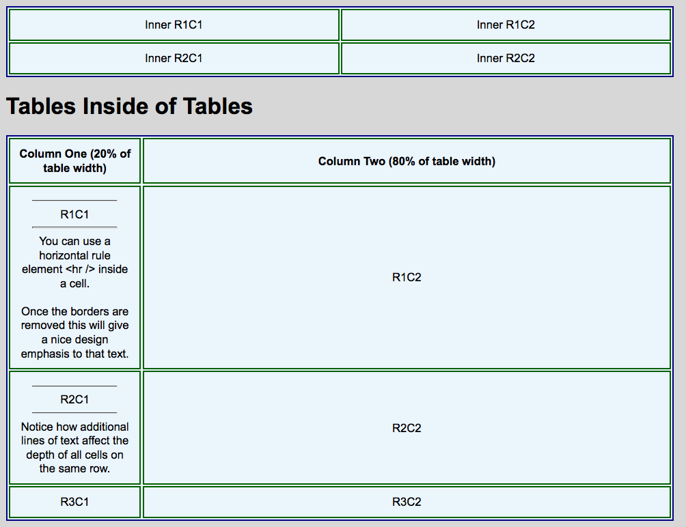
Use id=" " attributes to apply specific styles
Often a web designer will want the inner table to have a different look and feel. You can use CSS to do this.
- CSS Best Practices: Always write the CSS to style from general to specific.
For example, write the CSS selectors that style all of the table, th, and td elements.
Then, follow that with specific CSS selectors for more specific styling changes.
- In the <table> element of the inner table, add an id=" " attribute.
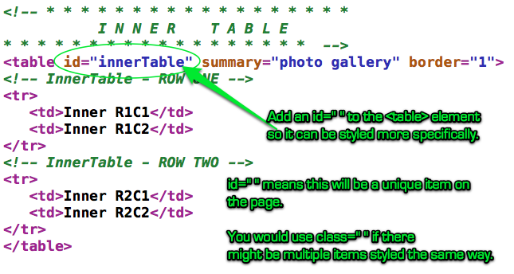
- Inside the <style> element in the <head> add styling for this specific table without affecting any other tables on the page.
Write the specific CSS properties AFTER the more general ones.
You should already have the general CSS code written. Just add a nice comment at the top identifying this code.
Then add the more specific table styling.
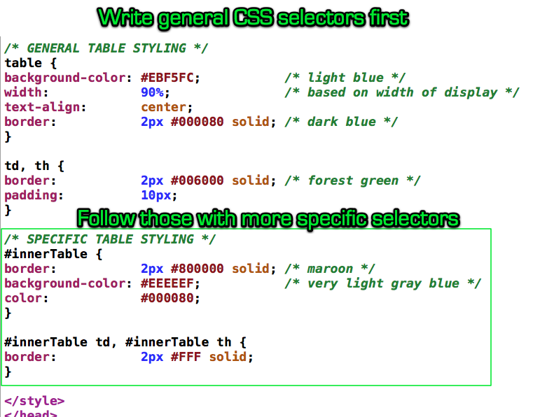
Note how the more specific #innerTable td and #innerTable th both require the id marker and are separated with a comma.
Here is what the output should look like: (click on the image for a larger view).
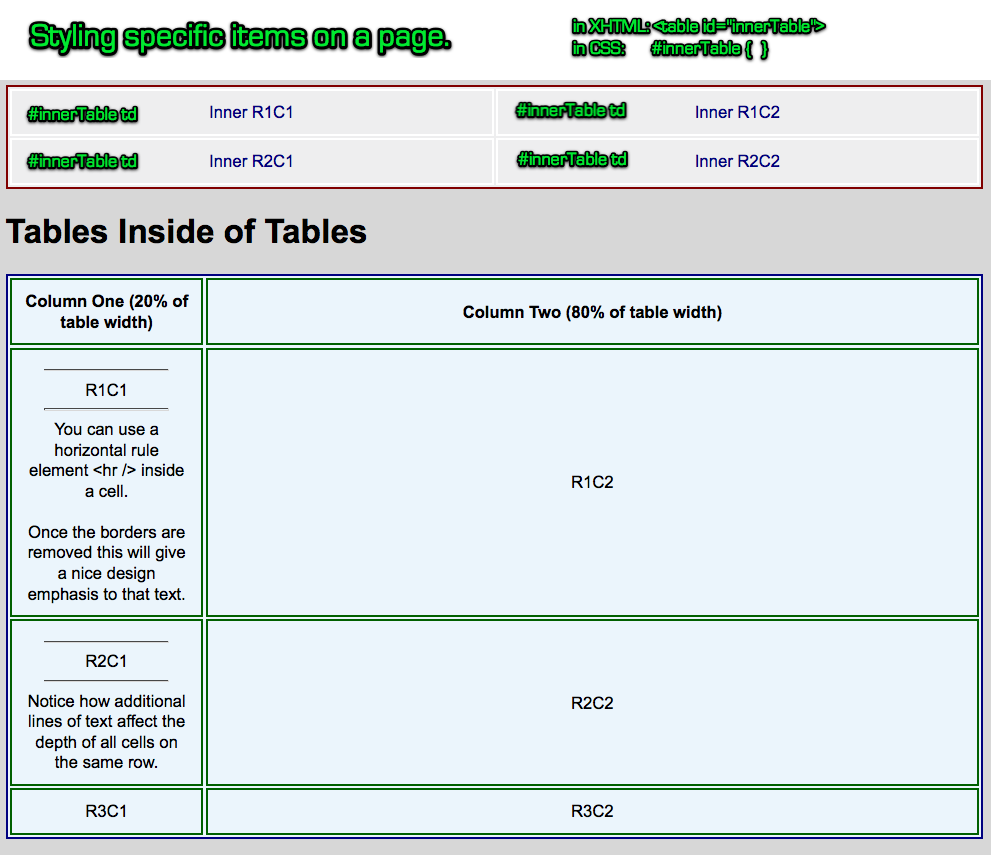
If you added more tables to the page (without using the id=" " attribute) they would be styled just like the larger, outer table using the more generic table CSS selectors.
Add the Images
- In the same folder as the .html page you are developing, create a new folder named: graphic.
Here is a suggested folder structure. You may have slightly different names for the folders on your computer.
The important thing is to understand the relationship between this particular graphic folder and the web page you are building. They are both in the same folder.
Notice the path statement at the bottom of the screen shot. This is the full or exact name of the file, showing its location in the file system (the file hierarchy).
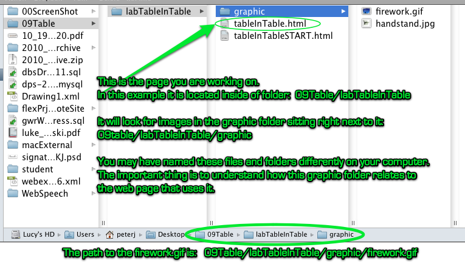
- Save the images to the graphic folder. Right-mouse
click on each image below. Select "save image as" from list of options.
Save these in the graphic folder.
Follow the naming conventions!
(Start with lower case, no spaces, no underscores, no plurals. useCamelCaseOnlyCapitalizingTheFirstLetterOfNewWords)
This will help you get the spelling correct when your files are moved out to the server which enforces UPPER/lowercase.

- Now, back to the inner table. Replace the "Inner R1C1" and "Inner R1C2"
text strings with an <img /> element inside the top two <td> cells.
Replace the lower "Inner R2C1" and "Inner R2C2" text strings with some captions inside the lower two <td> cells.
Here is some code you can use as a guide:
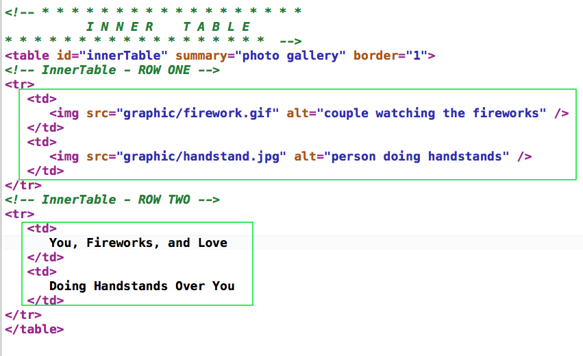
Here is what it should look like when you have the images and captions in place:
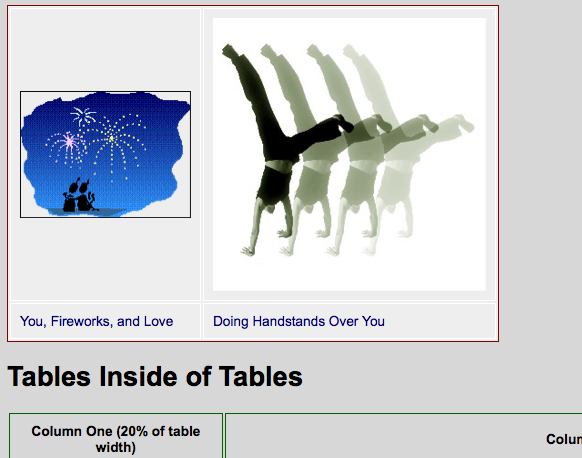
- Let's center the captions inside the row and make them bolder.
The quickest way to do that is to center the text in the row using CSS.
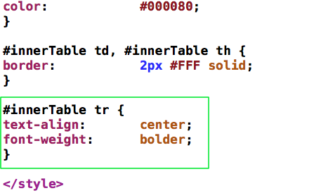
You could have set up a specific id=" " attribute for this row, but try to keep things as simple as you can. Later, if you needed to be more specific you can always take that road.
Move the Inner Table into Position (In 3 steps without using the mouse!)
Finally, we have the everything set up the way we want, especially with the inner table.
Now it is simply cutting the inner table code (including the comments) and pasting it inside the <td> data cell of the outer table.
1. Select the inner table code. A great trick is to click and drag down the line numbers (in most text editors). This selects the entire line(s) and perserves your code formatting.
2. Cut the code using CTRL X.
3. Repostion the cursor and paste the code using CTRL C.
Let's put it in the R2C2 position of the larger table.
Here is the code after it has been moved: (Click on image for larger view)
And here is a sample of what you output should look like: (Click on the image for a larger view.)
Finish up with a bit of CSS to get everything centered:
And here is the finished page: (Click on the image for a larger view.)
Here is the complete source code: tableInTableFINAL.html. (Right-mouse click on the file. Choose "save link as" from the list of options.)
Tutorial written by Peter K. Johnson
Revised: March 18, 2011 by Peter Johnson